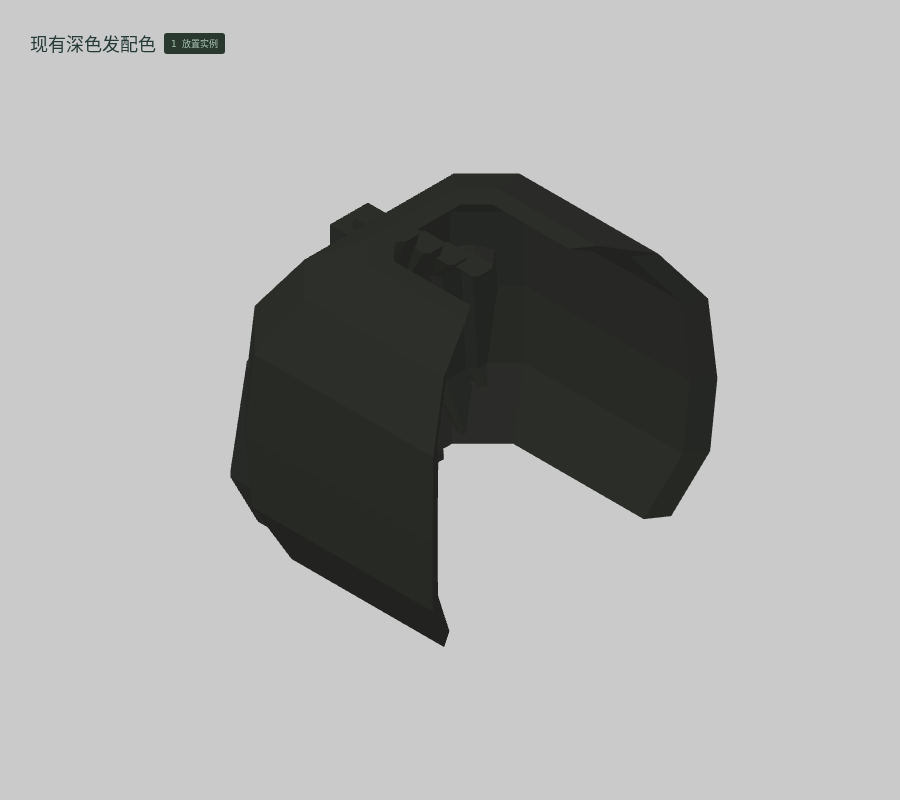
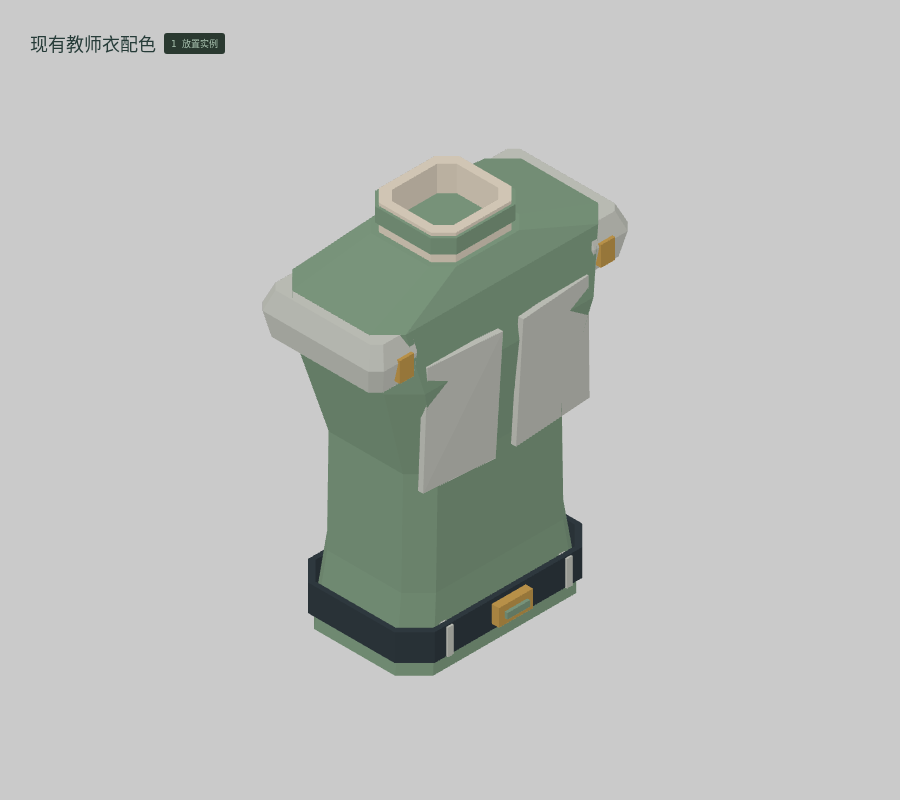
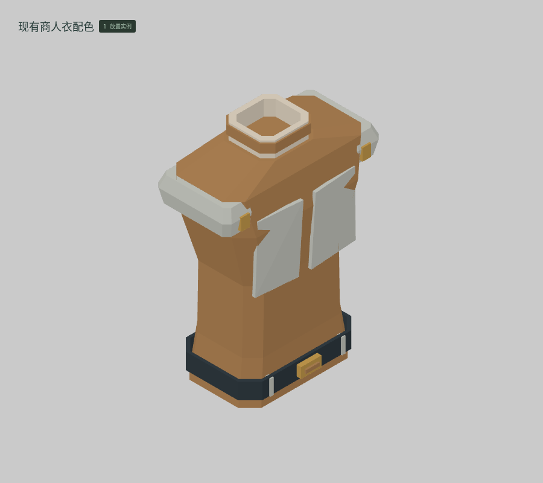
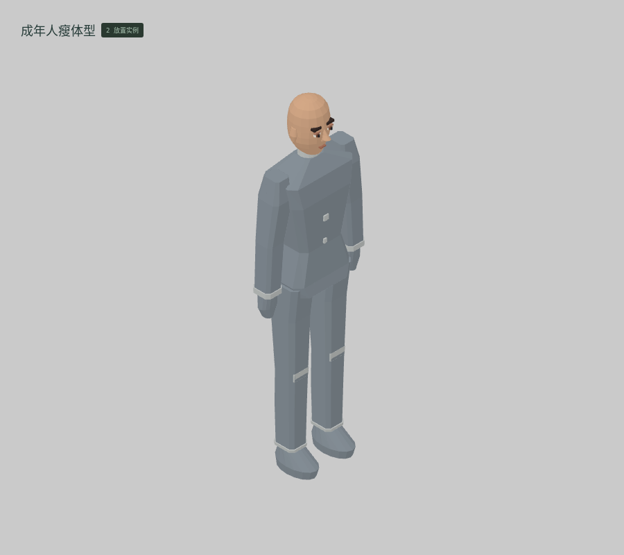
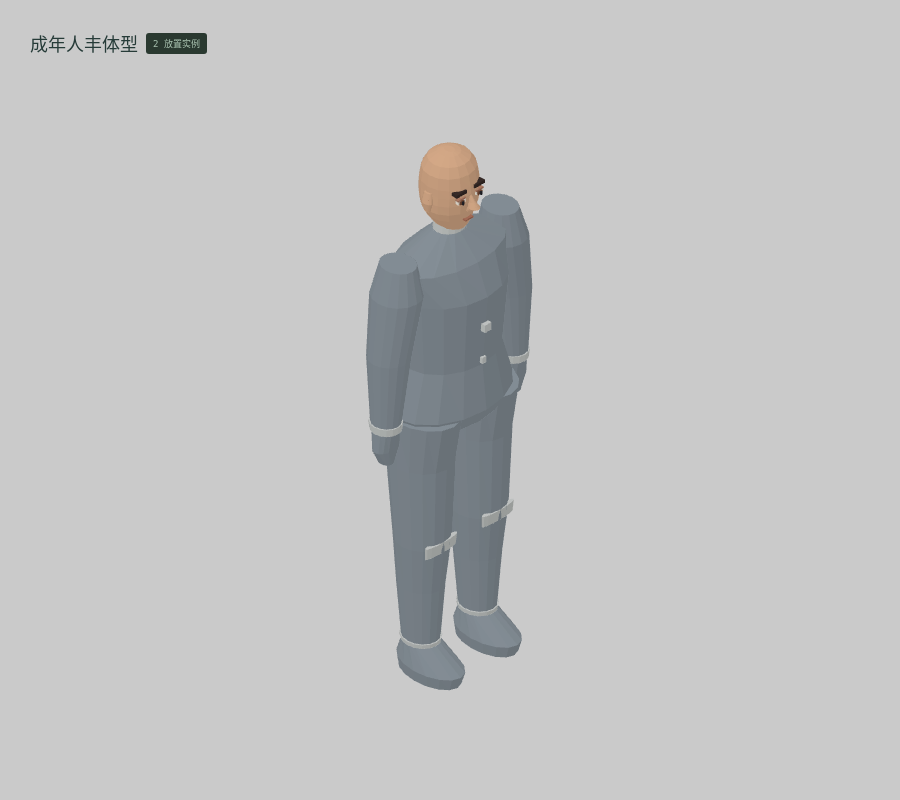
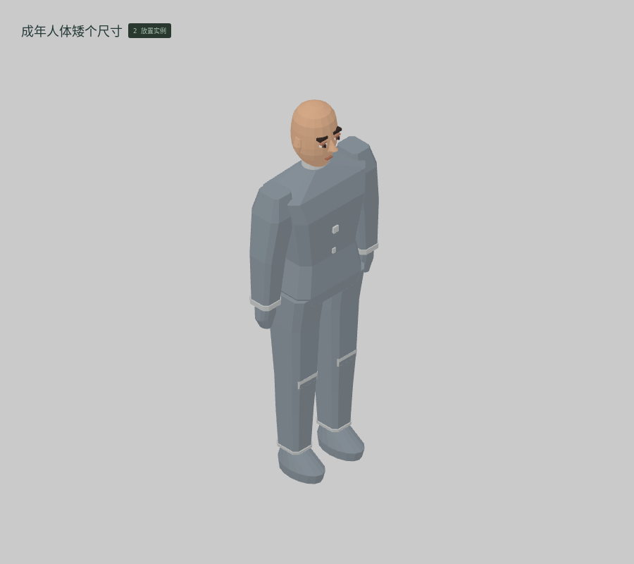

<!doctype html><meta charset="utf-8"><style>*{box-sizing:border-box}body{margin:0;background:#dfe1dd;color:#273d34;font:18px system-ui,'PingFang SC'}header{padding:26px 36px}h1{font-size:30px;margin:0 0 10px}main{display:grid;grid-template-columns:repeat(4,1fr)}figure{margin:0;border:1px solid #b7c0b6;background:#d4d8d1}img{display:block;width:100%}figcaption{padding:13px 22px 18px;font-size:19px}small{display:block;font-size:13px;margin-top:5px}footer{padding:24px 36px}</style><header><h1>云山 · M064 · 参数变体 · 12 件三维候选</h1>真实编辑器截图 · 基础块件与连续网格 · 不使用 AO / 辉光</header><main><figure><figcaption><b>CHAR-045 现有灰褐裤装配色</b><small>母版参数变体 · 1 实例 · 180 体素格 · 实际边界 0.18 × 0.43 × 0.20 m</small></figcaption></figure><figure><figcaption><b>CHAR-046 现有墨紫灰裤装配色</b><small>母版参数变体 · 1 实例 · 180 体素格 · 实际边界 0.18 × 0.43 × 0.20 m</small></figcaption></figure><figure><figcaption><b>CHAR-047 现有深色发配色</b><small>母版参数变体 · 1 实例 · 90 体素格 · 实际边界 0.23 × 0.22 × 0.20 m</small></figcaption></figure><figure><figcaption><b>CHAR-048 现有棕发配色</b><small>母版参数变体 · 1 实例 · 90 体素格 · 实际边界 0.23 × 0.22 × 0.20 m</small></figcaption></figure><figure><figcaption><b>CHAR-049 现有62岁以上灰发配色</b><small>母版参数变体 · 1 实例 · 90 体素格 · 实际边界 0.23 × 0.22 × 0.20 m</small></figcaption></figure><figure><figcaption><b>CHAR-050 现有警察衣帽配色</b><small>母版参数变体 · 1 实例 · 622 体素格 · 实际边界 0.46 × 0.62 × 0.24 m</small></figcaption></figure><figure><figcaption><b>CHAR-051 现有守卫士兵衣配色</b><small>母版参数变体 · 1 实例 · 622 体素格 · 实际边界 0.46 × 0.62 × 0.24 m</small></figcaption></figure><figure><figcaption><b>CHAR-052 现有教师衣配色</b><small>母版参数变体 · 1 实例 · 622 体素格 · 实际边界 0.46 × 0.62 × 0.24 m</small></figcaption></figure><figure><figcaption><b>CHAR-053 现有商人衣配色</b><small>母版参数变体 · 1 实例 · 622 体素格 · 实际边界 0.46 × 0.62 × 0.24 m</small></figcaption></figure><figure><figcaption><b>CHAR-076 成年人瘦体型</b><small>母版参数变体 · 2 实例 · 398 体素格 · 实际边界 0.55 × 1.70 × 0.25 m</small></figcaption></figure><figure><figcaption><b>CHAR-077 成年人丰体型</b><small>母版参数变体 · 2 实例 · 398 体素格 · 实际边界 0.60 × 1.70 × 0.31 m</small></figcaption></figure><figure><figcaption><b>CHAR-078 成年人体矮个尺寸</b><small>母版参数变体 · 2 实例 · 398 体素格 · 实际边界 0.59 × 1.55 × 0.25 m</small></figcaption></figure></main><footer>每格独立适配画幅，各模板不共用同一比例尺。几何候选，尚未通过人工美术验收。原生体素与连续网格分别保存和导出。</footer>